From the archive
Mean-Variance Optimization and Monte Carlo Simulation with a Stock Portfolio
Finding the efficient frontier for a five-stock portfolio, then stress-testing the max-Sharpe and min-volatility picks with Monte Carlo simulation.
Modern Portfolio Theory & Mean Variance Optimization
When it comes to risk-adverse investing, modern portfolio theory gives pratical advice for finding optimal investments in terms of risk and return. The Mean-Variance Optimization is the mathematical framework that is used to find that optimal level - given a level of risk an investor is willing to take, we can maximize the exptected return on our investment. We will apply this concept with an example portfolio with five stocks and walk through the process of finding the most optimal portfolios. This will be our example portfolio: Amazon,com (AMZN), Berkshire Hathaway Inc. (BRK-B), JPMorgan Chase & Co. (JPM), Vanguard 500 Index Fund Investor Shares (VFINX), and McDonald's (MCD).
Modern portfolio theory suggests that when creating a diversified portfolio, one should manage the balance of risk to reward. When two different portfolios offer the same return, the investor will prefer the less risker one if the option is available. To achieve this goal, we will use the method of mean-variance optimization to determine the most efficient portfolios.
Mean-variance optimization is a technique that analyzes the risk-reward ratio of different portfolios. Ideally, the investor would want the portfolio with the least risk given a set return. These portfolios sit on the efficient frontier of all possible portfolios. We can visualize this idea using the mean-variance chart below, where the x-axis represents the amount of risk (volatility) and the y-axis represents the expected return. The blue region represents all possible portfolios, changing the weights of the portfolio can bring different returns and different levels of risk. On the left chart we highlight a portfolio with a red dot – this portfolio would not be considered efficient because we can select a less risker portfolio with the same rate of return by going towards the left of the x-axis. And one can select a portfolio with much higher return of the same level of risk by going up on the y-axis. The chart on the right shows a portfolio that would be considered efficient since it provides the highest amount of return for that given risk. The portfolios that lie on the outer left region are considered the most efficient, and those profolios are considered to be on the “efficient frontier”.
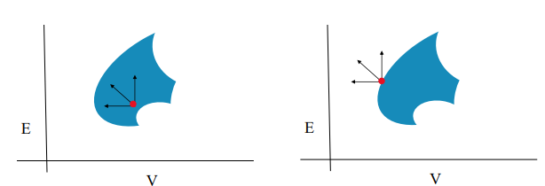
The first step is to load our portfolio's historical data into a pandas dataframe. Then we'll go on to calculate the expected return and risk of the portfolio by using the historical data of the last 20 years and getting the adjusted close for each stock.
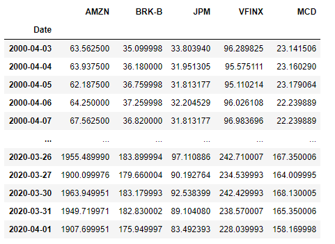
Now that we have the dataset in a pandas dataframe, we can explore the data a bit to get familiar with it. Plotting the historical data of the portfolio will give us a better understanding of the price action over the last 20 years:
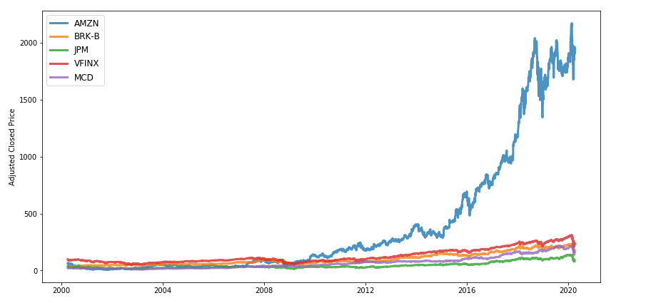
The exptected mean of the portfolio is calculated by taking the sum of exptected return of each stock times the weight associated to that stock. The weight refers to the percentage of the total portfolio budget is going to be allocated to that stock. For example, if we assign a weight of 0.2 for AMZN, 20% of the total portfolio budget will go towards that stock. Let's do some more exploratory analysis and find the exptected annual return for each stock and the portfolio. We do this by finding the daily average return for each stock and multiply it with the number of trading days in year, which is 252. For the annual exptected return we'll take the average of the five stocks:
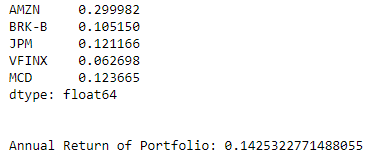
The expected risk of the portfolio can be calculated by taking the standard deviation of the portfolio using this formula. Since the portfolio has 5 stocks we'll adjust the parameters later when we generate random portfolios:
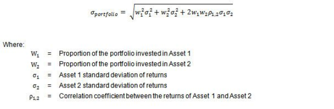
Generating Portfolios
Now we will generate some portfolios with randoms weights to each stock through a simulation. The total weight of the portfolio needs to be 100% so we'll randomly distribute the weights of different portfolios and calculate the exptected return and risk of each portfolio. To do this we will create a function generate_portfolios that will create the random portfolios and another function portfolio_annual_returns that will calculate the expected return and risk of our random portfolios.
Now we will run a simulation to generate our portfolios as well as finding the most efficient portfolios.
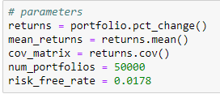
After running the random portfolio generator, the program gives us two important portfolios to consider: the portfolio with the highest Sharpe ratio and the portfolio with minimum volatility. The results are shown below with our portfolios and their respective weights. The graph below shows the results of the random portfolios that were generated along with the two portfolios highlighted with a star. The max Sharpe ratio portfolio brings an annual return of 17% and a standard deviation of 23%. The min volatility portfolio brings an annual return of 10% with a standard deviation of 17%.
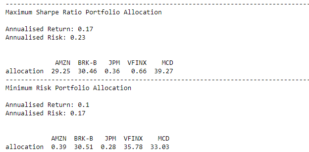
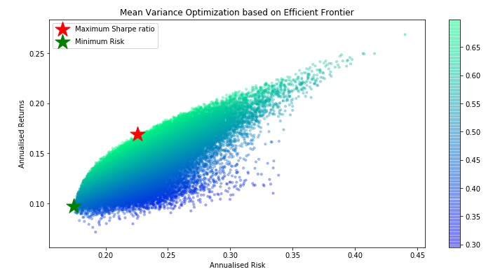
Monte Carlo Simulation with the Optimal Portfolios
We can use these two portfolios and run a Monte Carlo simulation to see the performance over a given time inveral. The Monte Carlo simulation will be contucted by randomly drawing from the portfolio's daily returns distribution and applying the returns to our initial balance over a one year period. First lets start by finding the distribution of the portfolio's daily returns. To do this, we need to muliply the daily returns to the weights of the portfolio:
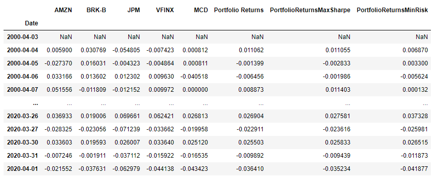
Now that we have the daily returns of each portfolio, we can compare their distributions with a histogram. After plotting the histograms over each other they both look about normal, which is an assumption we'll use later for the Monte Carlo simulation. The minimum risk portfolio sits on top of the max sharpe portfolio, which is shaded in blue. The minimum risk portfolio has a more narrow distribution near the mean, which makes sense because that portfolio is suppose to have the least amount of variance.
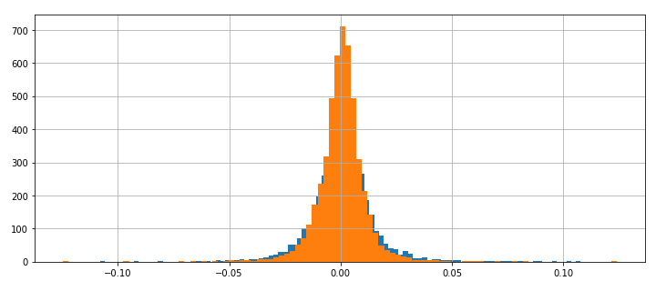
The way that the simulation will work is that we'll randomly draw from a normal distribution using Numpy's np.random.normal function with the mean and standard deviation from the portfolio distributions. We will use these random returns to create a random walk as if the portfolio had been in the stock market for one year (known as the buy-and-hold method). Then we'll compare the results of the portfolio's simulations. We are now ready for the Monte Carlo simulation, let's start with the max sharpe portfolio. The portfolio will start with a balance of $100k :
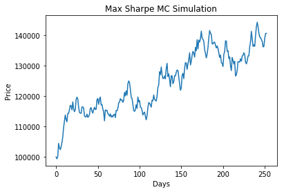
The max sharpe portfolio simulation had good results on this run, netting about a 40% profit in one trading year. Of course, with only one Monte Carlo point we cannot justify the performance of the profolio. Take for instance a different MC point that resulted in a huge loss:
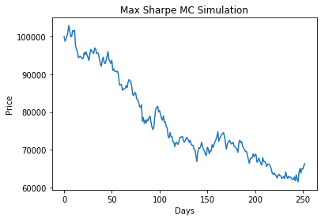
Basically, the end result could end in a huge profit, a huge loss, and everything in between. It's go to know that the simulations do resemble some characteristics of stock market, such as unpredictable trends and compounding gains/losses. In this 10-year simulation, we see that the portfolio beautifully compounded into impressive gains. Results for the minimum risk portfolio are similar in terms of randomness.
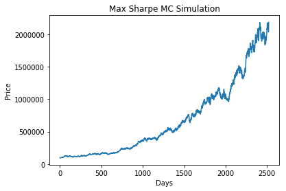
The real value of Monte Carlo simulations doesn't lie in only running one simulation, but in generating hundreds or thousands of simulations - then the we can assess the end results by modeling the probability of those results. So let's compare both portfolios, each generating 1,000 simulations:
Results
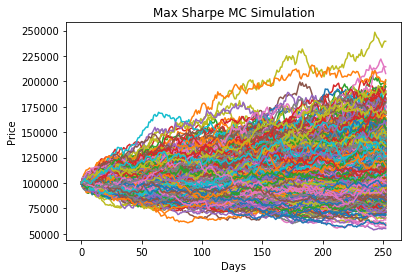
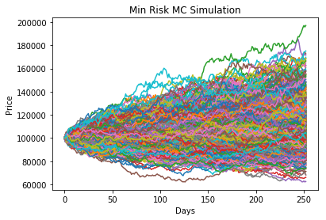
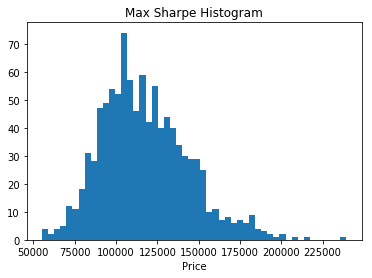
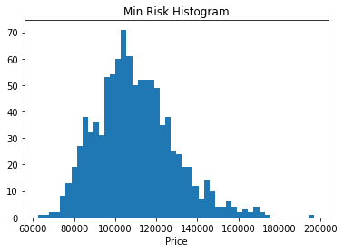
As expected, the simulations have a lot of variance by the end of the run, and since the distribution of each portfolio's daily returns were so similar, it is hard to tell the difference between them. By plotting the MC points on a histogram, we can quantify the MC points of each distribution and compare the performance.
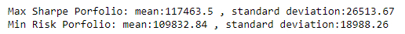
The mean for both portfolios do not differ too much, there is less than a $8,000 difference. Same with the standard deviation - about a $8,000 difference. The difference in the standard deviation is a lot more significant, with the max sharpe portfolio having a standard deviation of $26,513.67, the portfolio is a lot more volatile than the Min Risk portfolio. But the same is true for the upside, the former could potentially have greater profits than the other profolio. Ultimately it is up to the investor to decide the amount of risk they are willing to take on. We can concluded that the simulation results aligned with each portolio's daily returns distribution.
This simulation uses a simple model to project future outcomes of the portfolio's performance over a period of time, but it not capture the realistic nature of the stock market. If one were to assume that the stock market had a cyclical nature, it would be better to run a simulation that uses a distribution that is reinforced on the nature of the market cycle, whether it be bullish or bearish. That being said, these tools do provide a quantifiable way to evaluate a portfolio and what you could exptect while using the buying and holding strategy.
Build your own optimal portfolio using mean-variance optimization with the web app that I built:
Portfolio Mean Variance OptimizationReferences:
https://towardsdatascience.com/efficient-frontier-portfolio-optimisation-in-python-e7844051e7f
https://www.pythonforfinance.net/2016/11/28/monte-carlo-simulation-in-python/
Originally published May 2020. Moved to the new site in October 2026 with the text unchanged.